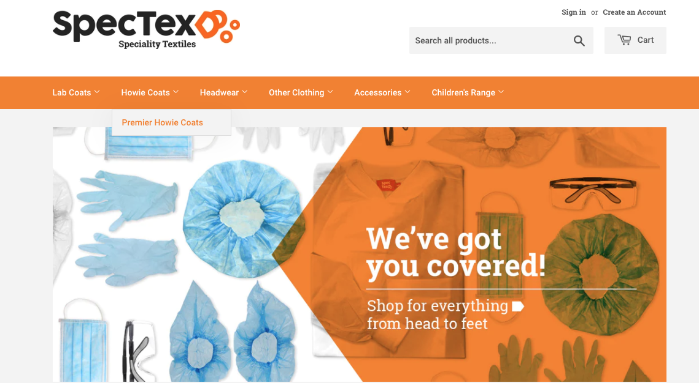

Bringing Your Ideas to Life Through Engaging Video Scripts
Explainer videos are a powerful tool for communicating complex ideas clearly and concisely. They are used to introduce a product or service, explain a process, or provide an overview of a topic.
As a professional copywriter, I specialize in creating engaging and informative explainer video scripts that bring your ideas to life.
My approach to explainer video script writing is to first understand your goals and objectives. I work closely with you to identify the key messages you want to convey and the audience you want to reach. From there, I craft a compelling narrative that captures the essence of your message and engages your viewers.
Whether you need a script for an animated explainer video, a live-action product demo, or a whiteboard animation, I have the skills and expertise to deliver.
My scripts are clear, concise, and optimized for maximum impact.

Have you been fascinated with jewelry and gemstones and always wanted to create one?
Do you wish or dream of becoming a goldsmith but don't know where to get practical learning experience?
At Lesunja Academy, you will learn and develop the skills of a goldsmith, from the basics to the certified final apprenticeship exam.
We take you through all the important aspects of goldsmithing, both theoretical and practical, setting you on a path of greatness.
Join Lesunja Academy to start your journey to goldsmithing today!

Do you know you can tap into unlimited foreign currency tucked away in drawers and forgotten after travel adventures?
Do you also know you can make a lasting difference if you own leftover foreign currency?
At Global Coin Solutions, we believe that every coin, no matter how small, has the potential to make a significant impact on charitable causes.
Unlock the power of forgotten coins for your organization with Global Coin Solutions.
Transform your leftover foreign currency into a beacon of hope for charitable organizations worldwide.
Visit www.globalcoinsolutions.com today.

Meet Darcy, a hardworking professional grappling with the challenge of managing her rapidly growing textile business's inventory while reducing costs.
Determined to find a solution, Darcy takes a proactive step and reaches out to Spectex, a trusted name in the textile industry known for their unparalleled expertise and service.
Impressed by Spectex's stellar reputation and extensive experience spanning over two decades, Darcy eagerly contacts them to inquire about their services and pricing.
The representative's in-depth understanding of Darcy's business's unique requirements and challenges strikes a chord, igniting a glimmer of hope.
It becomes evident that Spectex has an array of tailored solutions designed to reduce expenses, streamline operations, and drive her business towards new heights of efficiency and profitability.
With an unwavering commitment to customer satisfaction, the Spectex representative personally visits Darcy's textile business to deliver the requested items, cementing the foundation of a promising partnership.
Spectex's dedication to delivering outstanding service with a transparent pricing structure ensures Darcy's ongoing satisfaction and peace of mind.
Over the next two weeks, the Spectex representative closely monitors the usage amounts, diligently ensuring that the right quantities of products are being delivered.
This proactive approach ensures that Darcy's business is never out of necessary supplies, allowing her to focus on what she does best.
Spectex continues to exceed expectations by consistently delivering the proper quantity and unwavering quality of products every week.
Darcy's business thrives, benefiting from the reliable service it deserves, week after week.
Want to be like Darcy?
Take the first step towards transforming your business. Contact Spectex today to discover how their expertise and dedication can drive your success to unprecedented heights.
Spectex - Reliable Service, Unbeatable Value.

What if I told you that your family or business could become legally exempted from taxes for the rest of your lives?
Imagine how amazing it is to get complete access to the same methods that make the wealthy have such an easy lifestyle compared to most regular day-to-day business owners, families, and individuals.
That’s what we help you with at Liberty Aid Academy.
Introducing our McCaig Mastery Trust course, where we help business owners, families, millionaires looking to protect their assets, financial planners and CPAs, and everyday people like me to improve their lifestyle with legal, easy-to-use financial methods not widely known.
It is a Common Law Irrevocable Ecclesiastical Trust that is not taxable and operates similarly to a church.
We will walk you through this unique system I came across after losing my business, home, bank accounts, credit rating, and friends, moving from riches to rags overnight.
But with the strategies in this trust, I came back stronger.
The trust will manage your finances in your lifetime or after, reduce tax liabilities, protect assets, and give other notable benefits like food stamps, free electricity, free health insurance, etc.
The trust can hold cash and other things like property, investments, business interests, life insurance policies, vehicles, and more.
It can also have credit cards, bills, and anything else any other corporation can have or do.
And you can open this trust in a single day in three steps!
• Read and watch the modules
• Fill out provided trust document
• Schedule a bank appointment and open trust!
It’s that simple!
Enroll today to gain financial mastery!

Are you tired of clutter and junk taking up space in your home or office?
Say goodbye to the hassle with Mammoth Bags!
Our simple 3-step process makes it easy to clear your junk.
Step 1
Assess your collection size and type of waste. Mammoth Waste offers two convenient options: man and van rubbish removal for bulky waste or skip bag collections for heavy waste.
Step 2
Book your collection online in just 60 seconds. Our user-friendly website makes it easy to order the perfect size bag.
Step 3
Sit back and relax while we collect and recycle all your junk. It's that easy!
Once scheduled, our dedicated team will arrive at the agreed time, ready to swiftly collect and responsibly dispose of your junk.
We take pride in our commitment to recycling, ensuring that your waste gets handled in an environmentally friendly manner.
So, what are you waiting for?
Take back control of your living space with Mammoth Bags.
Book now at www.mammoth-waste.co.uk and let us handle the rest.

Would you like to showcase your business to your audience in a way that photos and videos cannot?
Do you want to get more visibility for your business and stand out ahead of your competitors?
Then think 360 Virtual Tour by Vaadhoo Media!
Just imagine stimulating your consumers' spending with a virtual tour of your business.
That is what we offer!
Using the latest 8k 360 imaging cameras with state-of-the-art software, we will create content-rich immersive tours that put your clients at the center of your business.
Not only that. We back our content creation with support and analytics too.
So that at each quarter, you will get a report showing the number of views, the demographic of viewers and even a detailed analysis of what they viewed.
That way, you can easily make changes and save costs.
Even the virtual tour can be adapted and updated as your objectives change.
Plus, there is no need to invest in special equipment. Tours can be shared by email, web link, or even a QR code through a smartphone.
Get smart and start turning your customers from viewers to buyers today.